Scratch es un entorno de programación gráfico y gratuito desarrollado por un grupo de investigadores del Instituto Tecnológico de Massachusetts (MIT) bajo la dirección del Dr. Mitchel Resnick.
Fue diseñado como medio de expresión para ayudar a los niños a expresar sus ideas de forma creativa, al mismo tiempo que desarrollan habilidades de pensamiento lógico, creando juegos y animaciones que pueden compartirse.
Podemos trabajar con una versión descargada e instalada en nuestro ordenador o bien con la versión on-line de la web http://scratch.mit.edu, que si nos registramos, nos permitirá guardar en nuestro espacio virtual los proyectos que desarrollemos.
Como el propio menú superior de la web indica, Scratch está pensado para crear, explorar, comentar, ayudar y buscar proyectos compartidos.
La sintaxis de Scratch se basa en un conjunto de bloques gráficos de programación que se ensamblan para crear programas.
Scratch está instalado en los ordenadores del instituto .
Sin embargo si quisieras usarlo desde casa, a continuación te dejo los pasos para poder hacerlo:
Al entrar por primera vez en la web de Scratch tenemos dos opciones: Empezar a crear, que nos permite entrar en Scratch sin registrarnos y Únete.
Nosotros vamos a elegir la opción Únete, para poder guardar nuestros trabajos.
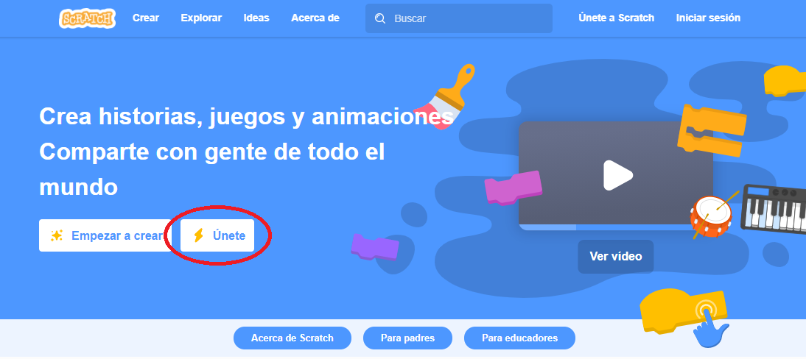
Unirse a scratcch
Después, nos pedirá nuestro nombre de usuario y una contraseña y pulsamos Siguiente.
Seleccionamos el idioma Spain y volvemos a pulsar Siguiente.
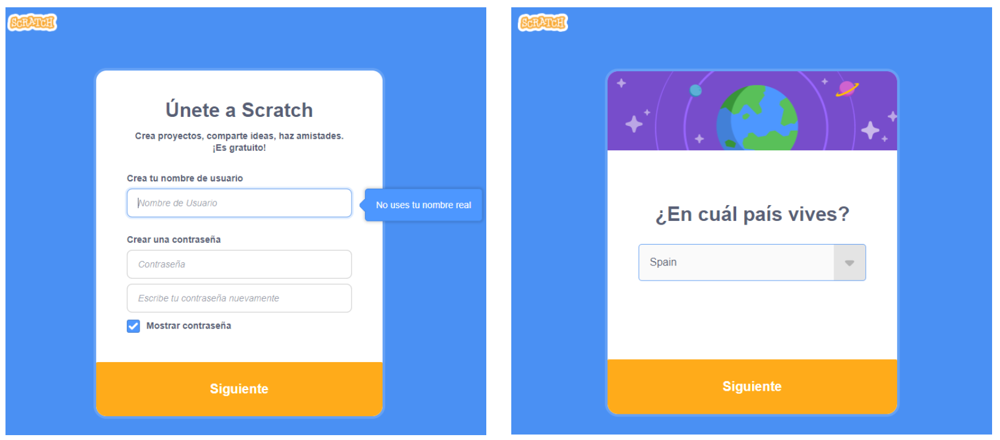
Configuración nombre de usuario y una contraseña. Elección del país.
Escribimos nuestra fecha de nacimiento, género y correo electrónico del instituto en sucesivas pantallas.
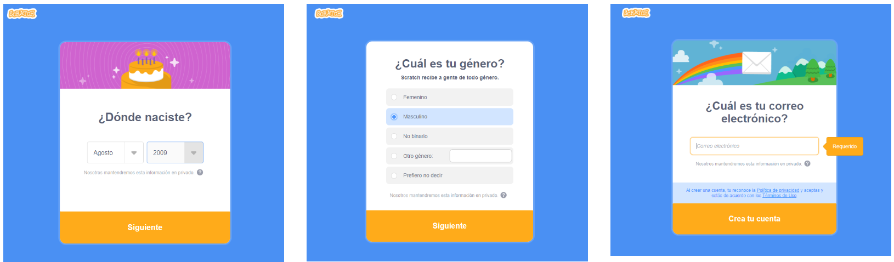
Configuración edad y género
Un mensaje de bienvenida nos dice que nos hemos registrado correctamente. Pulsando en el botón Lee nuestas Normas de la comunidad, accedemos a una serie de normas y finalmente a nuestro Scratch.
Comprobamos que estamos registrados mirando nuestro nombre de usuario en la esquina superior derecha y ya podemos empezar a programar pulsando el botón Crear.
Si seleccionamos la categoría Movimiento, nos aparecen los bloques de la misma; prueba a pulsar sobre cualquier bloque y verán cómo se ejecuta dicho bloque. Si arrastramos el bloque a la zona de programa lo podemos ejecutar también pulsando sobre el mismo.
Cuando queramos ejecutar más de un bloque a la vez, los tenemos que apilar o conectar en el orden correcto y tenemos que incluir al principio el bloque "Al hacer clic en ⚐ " de la categoría Eventos.
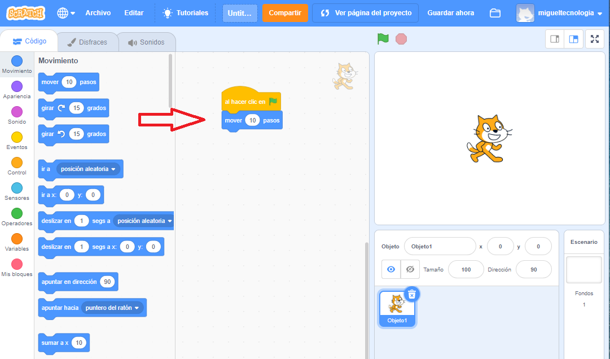
Movimientos
En la categoría Movimiento también está la orden "girar (...)grados", que permite que el gato gire sobre su eje una cantidad de grados determinados.
También está la orden "apuntar en dirección (...)" que nos permite situar el gato en distintas posiciones.
Además, la orden "ir a x:(...) y:(...)" nos permite situar al gato en un punto concreto de la pantalla.
Abre Scratch y realiza las siguientes actividades escribiendo previamente los diagramas de flujo.
Crea un programa en el que el gato avance 20 pasos cada vez que se pulse la bandera verde.
Haz un programa en el que el gato gire 45 grados y luego avance 50 pasos cada vez que se pulse la bandera verde.
Coloca el gato en la esquina superior izquierda y haz un programa para que ande hasta la esquina superior derecha, luego baje hasta la esquina inferior derecha, luego vaya hasta la esquina inferior izquierda y luego vuelva a la posición inicial. (Si lo haces bien, parece que el gato no se mueve).
Entrega: Crear un documento llamado AA2.1_Tu_nombre donde pegarás tu diagrama de flujo e imagen de scratch.
Podemos hacer que el personaje dibuje una línea mientras se desplaza, para ello hay que pulsar el icono de añadir extensión que se encuentra en la esquina inferior izquierda de la pantalla y elegir la extensión "Lápiz".
Al volver atrás, vemos que se ha creado una nueva categoría llamada Lápiz, con varios bloques verdes en su interior.
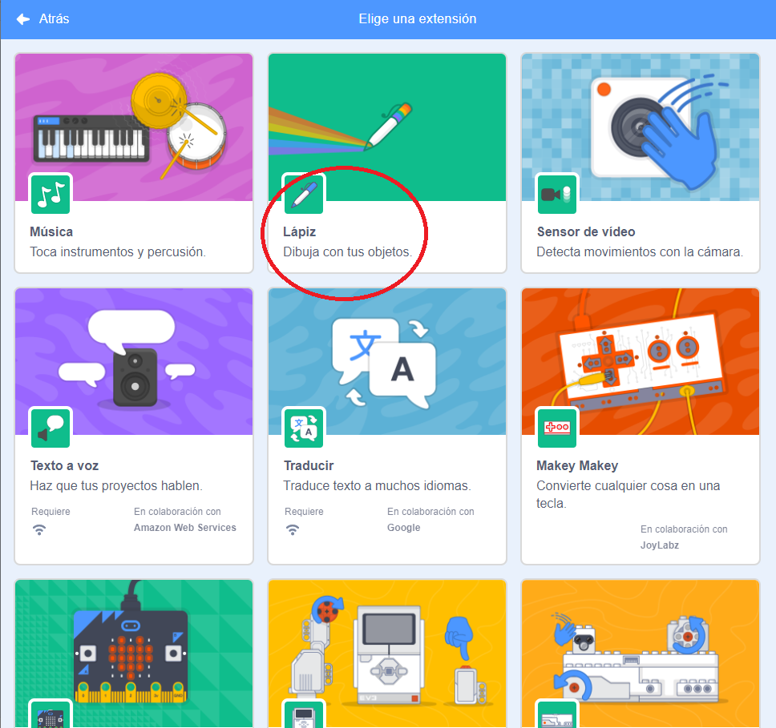
Dibujando con Lápiz
Veamos para qué sirven algunos de esos bloques:
Si ponemos el bloque "bajar lápiz" antes de mover, veremos que Scratch va dibujando una línea mientras se mueve.
Si queremos que el personaje deje de dibujar, hay que utilizar el bloque "sube lápiz".
La orden "sellar" hace que el personaje se quede dibujado en el lugar en el que se encuentra.
La orden "borrar todo" nos permite borrar todos los trazos hechos en la pantalla de Scratch; se suele incluir al principio de los programas para limpiar trazos de programas anteriores.
Dentro de la categoría Lápiz existen una serie de órdenes que permiten ajustar el grosor ("fijar el tamaño de lápiz a 1") y el color del lápiz ("fijar color de lápiz a ") para dibujos con distintas líneas. En el siguiente ejemplo hemos dibujado un triángulo equilátero con lados de grosor 5 y de tres colores distintos.
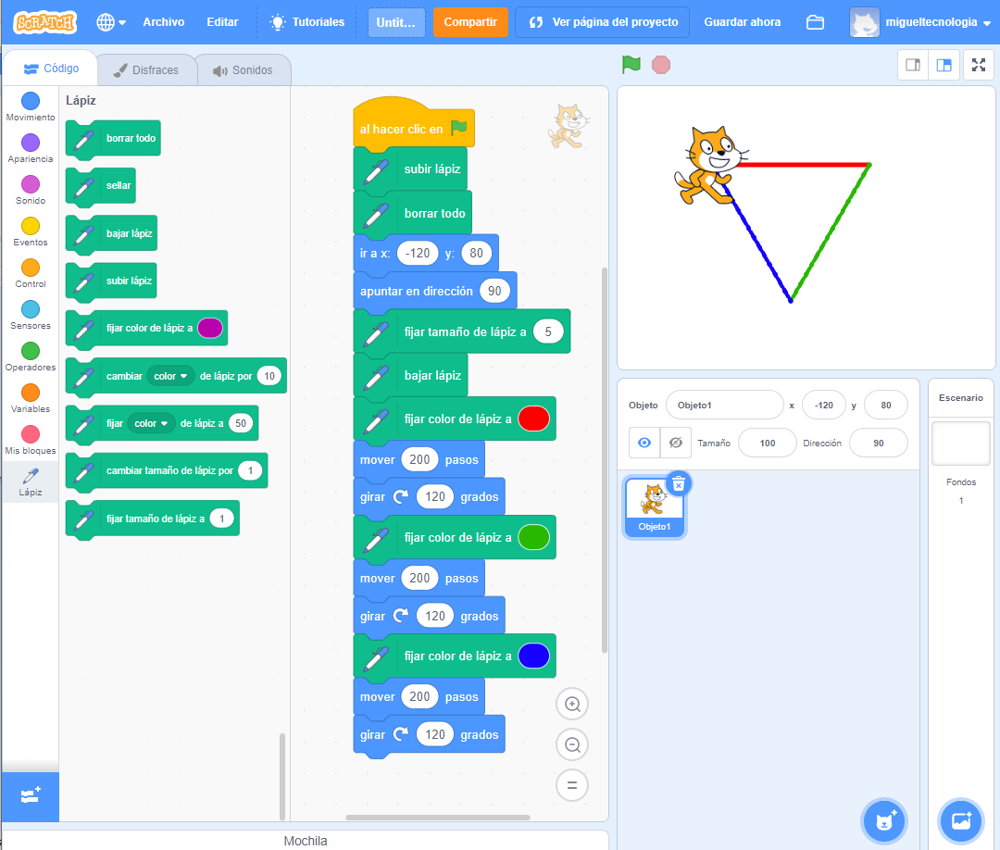
Cambiando características del Lápiz
Observa como en el ejemplo anterior se han empleado las órdenes "subir lápiz", "borrar", "ir a x:-120 y:80" y "apuntar en dirección 90º" para que el programa siempre se inicie con la pantalla en blanco y con el gato situado en un punto concreto.
Veamos el siguiente vídeo de Pedro Ruíz Fernández, donde se explica el uso del lápiz y se hace un pequeño programa para dibujar polígonos.
Abre Scratch y realiza las siguientes actividades escribiendo previamente los diagramas de flujo.
Crea un programa en el que el personaje avance 90 pasos dibujando una línea en color rojo, de grosor 5, a continuación debe girar 72 grados y repetir los pasos anteriores durante 5 veces (Sin utilizar estructuras de repetición). ¿Qué figura se ha obtenido?
Crea un programa en el que el personaje dibuje un rectángulo de 200 pasos de ancho y 100 pasos de alto.
Crea un programa que dibujo un patrón parecido al siguiente:
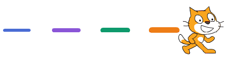
Imagen de referencia
Entrega: Crear un documento llamado AA2.2_Tu_nombre donde pegarás tu diagrama de flujo e imagen de scratch.
En los ejercicios anteriores hemos tenido que repetir varios bloques para conseguir dibujos con partes repetidas, como el triángulo o las líneas discontinuas.
Dentro de la categoría Control existen estructuras que permiten repetir los bloques que introduzcamos dentro: el bloque llamado "repetir (,,,)" y el bloque llamado "por siempre".
En los siguientes ejemplos se ha empleado el bloque de repetición "repetir (4)" para dibujar un cuadrado sin definir lado por lado y en el segundo ejemplo, se ha utilizado el bloque de repetición "por siempre" para no tener que estar moviendo continuamente al personaje. (Si no has quitado el lápiz, se hace un dibujo muy chulo).
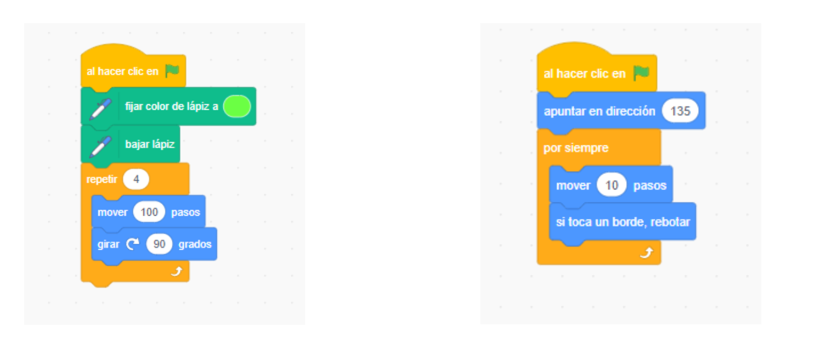
Estructuras repetitivas
Otras estructuras repetitivas son: "repetir hasta que (...)", que repite hasta que pasa "algo", como pulsar una tecla, chocar contra el borde, etc. y el bloque "esperar hasta que (,...)", que espera hasta que pasa "algo". Programas muy utilizados en juegos con movimiento.
En los siguientes ejemplos podemos observar el funcionamiento de dichos bloques:
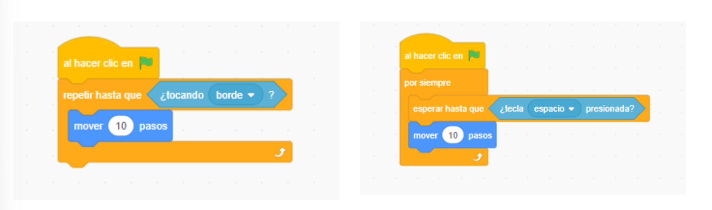
Estructuras repetitivasActividad
📝 AA2.3 Dando los primeros pasos: Estructuras de control¶
(C.ESP2 / CE2.2, CE2.3, CE2.4 / IC1-3p)
Abre Scratch y realiza las siguientes actividades escribiendo previamente los diagramas de flujo.
Crea un programa que dibuje un octógono de color azul. En el programa solamente puedes utilizar una vez las siguientes instrucciones.
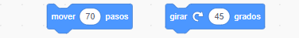
Mover y girar
Dibuja una estrella multicolor de 36 puntas. Para ello, debes dibujar 36 veces un lado de longitud 120 y girar 170 grados para dibujar el siguiente.
Añade el siguiente bloque para cambiar de color:
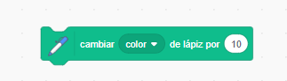
Cambiar color
Dibuja una estrella de 12 puntas multicolor, que tenga 12 lados de longitud 110 y girará 150 grados en cada trazo.
Crea un programa en el que el personaje gire 15 grados cada vez que se pulse la tecla g. (Para conseguirlo, utiliza el siguiente bloque)
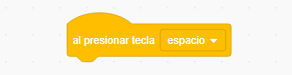
Bloque presionar tecla
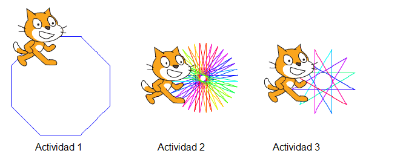
Imagen referencia
Entrega: Crear un documento llamado AA2.3_Tu_nombre donde pegarás tu diagrama de flujo e imagen de scratch.
Abre Scratch y realiza las siguientes actividades escribiendo previamente los diagramas de flujo.
Crea un programa en el que el gato "cat" nos cuente un chiste. Utiliza la extensión texto a voz y el bocadillo al mismo tiempo.
Crea un programa en el que el gato dibuje un rectángulo en pantalla, cada vez que llegue a una esquina, tiene que decir alguna palabra tanto con voz, como con un bocadillo.
Entrega: Crear un documento llamado AA2.4_Tu_nombre donde pegarás tu diagrama de flujo e imagen de scratch.
Dentro de la categoría Operadores existen las operaciones matemáticas básicas +, -, *, /, números aleatorios y otras funciones para unir palabras.
Las estructuras selectivas se utilizan para tomar decisiones y hacer una cosa u otra dependiendo de si se cumple una condición o no.
Las condiciones básicas son "Si..." y "Si... , sino..." y están dentro de la categoría Control (color naranja) Veamos unos ejemplos para aclarar su uso:
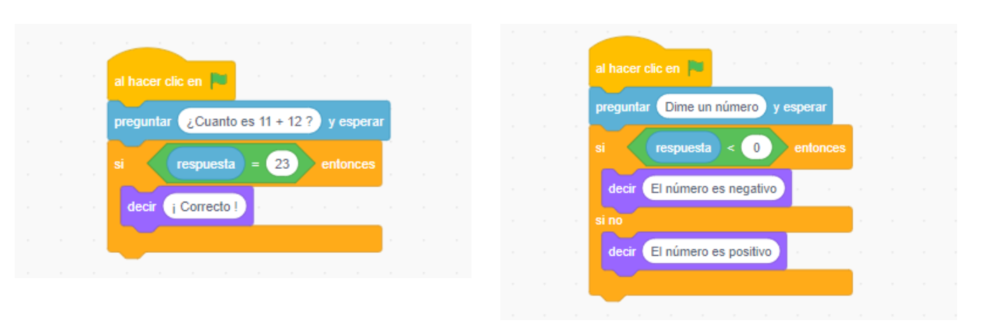
Estructuras selectivas
El operador "modulo" nos da el resto de una división, por lo tanto podremos identificar los número pares si dividimos por 2 y el resto es cero.
También existen operadores para realizar operaciones con letras y palabras.
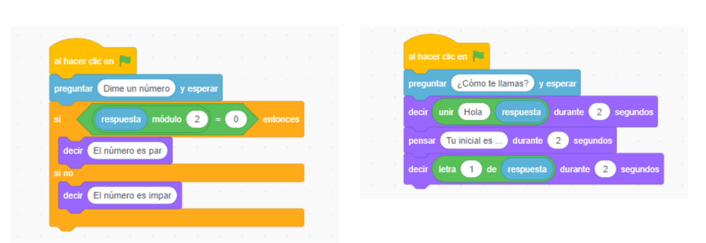
Estructuras selectivas
Para obtener un número al azar o "aleatorio" entre dos cantidades, se utiliza el siguiente bloque
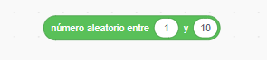
Estructuras selectivasActividad
📝 AA2.6 Dando los primeros pasos: Estructuras Selectivas¶
(C.ESP2 / CE2.2, CE2.3, CE2.4 / IC1-3p)
Abre Scratch y realiza las siguientes actividades escribiendo previamente los diagramas de flujo.
Prueba los cuatro programas vistos anteriormente.
Crea un programa en el que te pregunte un número y luego te diga un número al azar entre 0 y el que tu has dicho.
Crea un programa que pregunte un número y diga si es múltiplo de 10.
Con el programa de la derecha, se puede dibujar un círculo (realmente es un polígono de 72 lados). Amplia el programa para que dibuje 10 círculos de distintos colores en posiciones de la pantalla al azar.
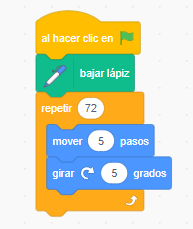
Imagen referencia
Entrega: Crear un documento llamado AA2.5_Tu_nombre donde pegarás tu diagrama de flujo e imagen de scratch.
Scratch desarrolla historias en un escenario en el que se pueden incluir distintos personajes y objetos que pueden ser programados de forma individual.
El escenario es la zona donde se muestran los personajes y objetos, cada escenario lleva asociados sus propios fondos, sonidos y programas:
Fondos: Son los escenarios de nuestros programas, pueden ser incluidos de la biblioteca de Scratch, subidos desde el ordenador o capturados desde una cámara web. Los fondos pueden ser cambiados durante el programa.
Sonidos: Cada escenario tiene unos sonidos asociados que pueden obtenerse en la biblioteca de Scratch o pueden subirse desde el ordenador o grabarse a través del micrófono.
Código: Son los bloques de instrucción que definen el comportamiento del fondo: cambiar de fondo, crear efectos, añadir sonidos, etc.
En el siguiente ejemplo se han incluido dos nuevos fondos llamados "castle1" y "castle2" de la biblioteca; mediante el siguiente programa se puede cambiar el fondo al pulsar las teclas 1 y 2.
Los objetos son los personajes que podemos utilizar en nuestros programas de Scratch, al igual que los fondos, podremos elegirlos de la biblioteca, dibujarlos en el mismo programa, cargarlos desde el ordenador o desde una cámara web.
Y al igual que los escenarios, cada objeto lleva asociados sus propios disfraces, sonidos y programas:
Disfraces: Los disfraces son las distintas formas que puede adoptar un objeto, de esta forma podemos simular un personaje que anda, vuela o se mueve.
Sonidos: En la biblioteca existen sonidos para cada personaje que pueden utilizarse durante el programa del objeto.
Código: Son los bloques que definen el comportamiento de cada personaje. Cada personaje tiene su propia área de programas. Para hacer que se ejecuten todos los programas, hay que pulsar la bandera verde que hay encima de la ventana de ejecución.
En el siguiente ejemplo se ha realizado un programa para cada personaje, si presionamos la bandera de cada personaje, solo se moverá ese personaje, pero si presionamos la bandera verde de la ventana de ejecución, podremos ver cómo se mueven ambos personajes.
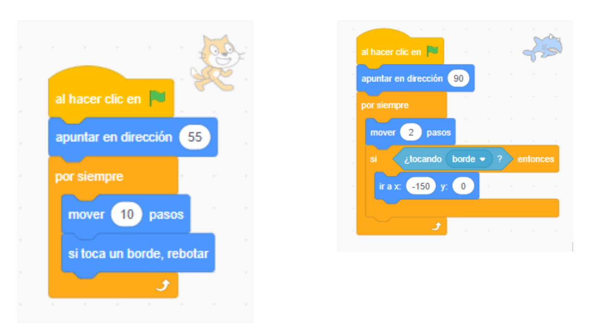
EjemploActividad
📝 AA2.7 Dando los primeros pasos: Objetos y escenarios¶
(C.ESP2 / CE2.2, CE2.3, CE2.4 / IC1-3p)
Abre Scratch y realiza las siguientes actividades escribiendo previamente los diagramas de flujo.
Elige un personaje que tenga varios disfraces (por ejemplo el tiburón) y un escenario adecuado. Haz que se mueva por el escenario.
Crea una historia en el que dos personajes conversen entre sí, puedes sincronizar los diálogos utilizando el siguiente bloque que hace que un personaje espere un tiempo determinado.
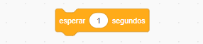
Esperar
Simula un personaje que pasa de una zona a otra de un juego, por ejemplo elige dos fondos de la categoría "ciudad" y haz que el personaje se mueva hacia la derecha. Cuando toque el borde, cambia el fondo y haz que el personaje aparezca a la izquierda.
Entrega: Crear un documento llamado AA2.6_Tu_nombre donde pegarás tu diagrama de flujo e imagen de scratch.
Una animación consiste en crear la sensación de que el personaje se mueve, cambiando disfraz alternativamente, por eso la mayoría de los personajes de Scratch disponen de varios disfraces que podemos ver y editar en la pestaña disfraces.
En ocasiones también podemos conseguir la animación de un personaje cambiando su tamaño, así podemos crear el efecto de que el mismo se aleja o se acerca a nosotros.
Dentro de la categoría "Apariencia" se encuentra el bloque "cambiar efecto", que nos permite hacer cambios en el aspecto del personaje, como cambiar su color, verlo a vista de ojo de pez, pixelarlo, desvanecerlo, hacerlo más brillante, aplicarle un remolino, etc.
Abre Scratch y realiza las siguientes actividades escribiendo previamente los diagramas de flujo.
Utiliza el gato para dibujar una línea de 180 pasos. Tras cada paso cambiará de disfraz y esperará un segundo. Cuando termine, tu personaje deberá pensar "Esto es fácil" durante tres segundos.
Crea un programa en el que aparezca un personaje que se acerque y se aleje al caminar, cambiando de disfraz con cada paso.
Aplica una deformación de ojo de pez a tu personaje. Debes aplicar el efecto de 10 en 10, repetirlo 50 veces y hacer una pausa de 0.1 segundo entre una repetición y la siguiente.
Entrega: Crear un documento llamado AA2.7_Tu_nombre donde pegarás tu diagrama de flujo e imagen de scratch.
En la parte de teoría de la unidad hemos visto que utilizamos los algoritmos para resolver problemas y que los codificamos en programas para que el ordenador pueda procesar las soluciones. En esta práctica vamos a resolver un problema que se da con cada comienzo de curso: presentarte a tus compañeros y profesores.
Ejercicio 1. Análisis
Para nuestra presentación utilizaremos el objeto Starfish, de la categoría Animales, y el fondo beach malibu. Los encontrarás en la biblioteca de objetos y la de fondos, respectivamente.
En primer lugar, pensamos cuatro aspectos que definan a nuestro objeto: su nombre y edad, su color favorito, sus gustos y aficiones o su música preferida.
Decidimos que nuestro objeto Starfish se llama Balubita, que tiene 150 años, que su color favorito es el azul y que su música preferida es el hip-hop.
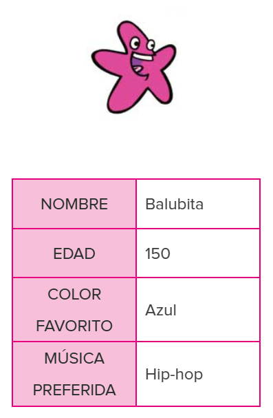
Ejercicio 2. Diseño
Ahora toca diseñar cómo llevar a cabo la presentación. ¿El proyecto se desarrollará secuencialmente? ¿Se deberá repetir alguna instrucción? ¿Será necesario que se cumpla alguna condición para que se activen movimiento, música o efectos sonoros? ¿Se moverá el personaje?
Balubita, para presentarse, quiere decir su nombre, edad y color favorito de forma secuencial. Además, quiere que, al decir su color, ella misma cambie de color y se vuelva azul. Y quiere moverse por la playa. Asimismo, a continuación, Balubita pedirá que hagamos clic en ella para que suene su música preferida.
Ejercicio 3. Diagrama de flujo
Debajo puedes ver el diagrama de flujo que indica el orden de las instrucciones. Corresponde a un algoritmo que combina las estructuras secuencial y selectiva.
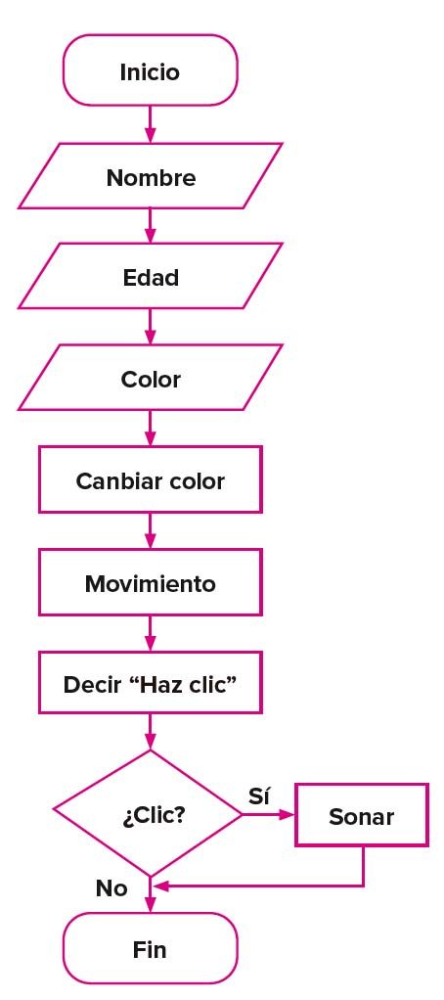
Ejercicio 4. Programar en Scratch
Ahora codificaremos la presentación en el lenguaje de programación Scratch, siguiendo el diagrama de flujo.
Entra en Scratch y haz clic en Crear.
Inicia un nuevo proyecto yendo a Archivo / Nuevo. Llámalo PT2.8_Tu_nombre.
Selecciona el personaje y el fondo indicados. Elimina el personaje Objeto1 que viene por defecto.
Comienza la codificación con la instrucción al hacer clic en bandera verde y ve incluyendo cada una de las instrucciones necesarias.
Utiliza la instrucción decir ... durante ... segundos, de la categoría Apariencia, para incluir cada uno de los mensajes. Elige una duración de 2 segundos en cada mensaje.
Para cambiar el color, añade la instrucción dar al efecto color el valor ... y escribe 150 para que el personaje quede de color azul.
Anida después la instrucción deslizar en 1 segs a x: 150 y: -50, de la categoría Movimiento.
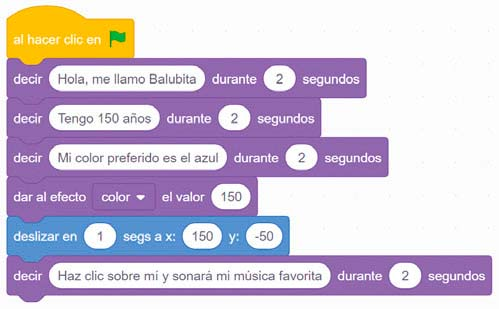
Incluye en otro programa, por separado, la instrucción al hacer clic en este objeto, de la categoría Eventos.
Anida en esta instrucción la orden iniciar sonido..., de la categoría Sonido, y selecciona Hip Hop (este sonido se incluye en la biblioteca de sonidos de Scratch). Para encontrar este sonido, o cualquier otro de la biblioteca, te puede ser útil acceder a la pestaña Sonidos y escribir su nombre en el buscador.
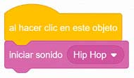
Ejercicio 5. Mejorar la presentación
Puedes mejorar el programa anterior si te fijas en el diagrama de flujo. Como puedes observar, la parte final incluye la condición de que el sonido suene sólo si hacemos clic en el personaje.
Elimina el programa que se ejecuta al hacer clic en el objeto.
En el programa que no has borrado, anida la orden esperar hasta que..., de la categoría Control, e incluye en ella la instrucción ¿tocando puntero del ratón?, de la categoría Sensores. Así indicamos al personaje que debe esperar hasta que lo toquemos haciendo clic con el puntero del ratón.
Anida ahora la instrucción si..., entonces, de la categoría Control, e incluye en ella la instrucción ¿tocando puntero del ratón?, de la categoría Sensores.
Por último, anida en el bucle si..., entonces la instrucción iniciar sonido Hip Hop, de la categoría Sonido.
Comprueba el resultado haciendo clic en la bandera verde.
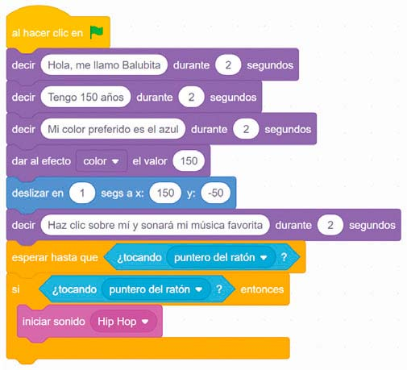
Observa que el personaje se queda en la posición x = 150, y = −50 y de color azul. Para evitar esto y hacer que el programa comience con el personaje en su posición y condiciones iniciales, se incluyen habitualmente al comienzo del programa las condiciones de partida. Para ello, añade debajo de la instrucción al hacer clic en bandera verde las instrucciones quitar efectos gráficos, de la categoría Apariencia, e ir a x: -200 y: -50, de la categoría Movimiento. Así, el personaje se situará en esas coordenadas y se mostrará de su color original cada vez que reiniciemos el programa.
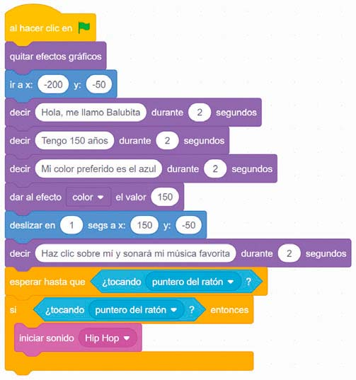
Prueba el programa.
Guardar en tu ordenador y seleccionando la carpeta en que guardas tus trabajos.
Modifica el programa para que la presentación se ajuste a ti mismo. Puedes incluir tu propia foto como personaje, y como fondo, un lugar en el que te guste estar. Guarda el proyecto como guarda el proyecto como PT2.8_presentacion.sb3 en tu ordenador yendo a Archivo.
💡 APT2.18 Polígonos de colores. Subalgoritmos en Scratch¶
(C.ESP2 / CE2.2, CE2.3, CE2.4 / IC2-10p)
En ocasiones, para facilitar la evaluación del software y evitar que los programas sean demasiado largos utilizamos subalgoritmos o procedimientos, que son pequeños programas a los que llama un programa principal para su ejecución.
Ejercicio 1. Dibujar un polígono en Scratch
Inicia un nuevo proyecto yendo a Archivo / Nuevo. Llámalo APT2.11_nombreapellido.
Haz clic en Añadir extensión y elige Lápiz.
Copia el programa de la figura de abajo para el personaje que aparece por defecto.
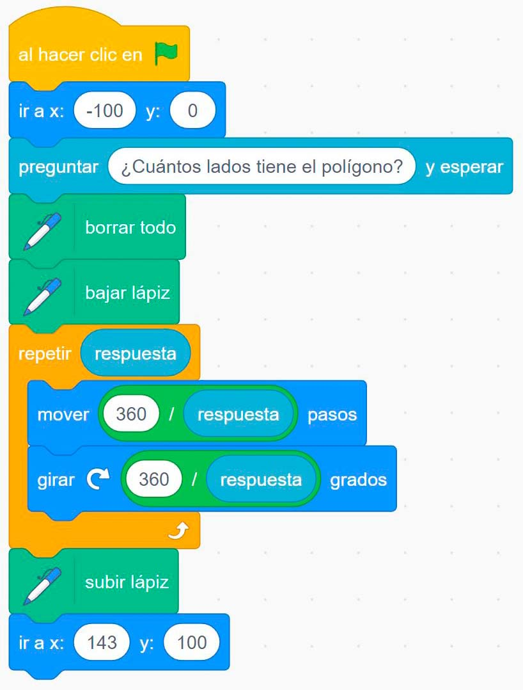
Prueba el programa con distintos números de lados.
Ejercicio 2. Crear un subalgoritmo
Vamos a modificar el programa anterior para crear un subalgoritmo que se pueda utilizar desde el programa principal.
Accede al menú Mis bloques y haz clic en Crear un bloque. Escribe como nombre dibujar polígonos.
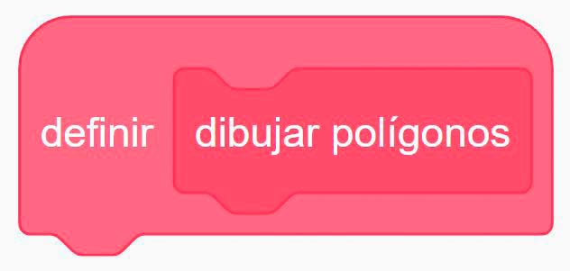
Comprueba que ha aparecido en tu espacio de programación un bloque nuevo, definir dibujar polígonos, similar a los bloques de inicio del menú Eventos. Anida debajo de dicho bloque todo el programa anterior, excepto la instrucción al hacer clic en bandera verde.
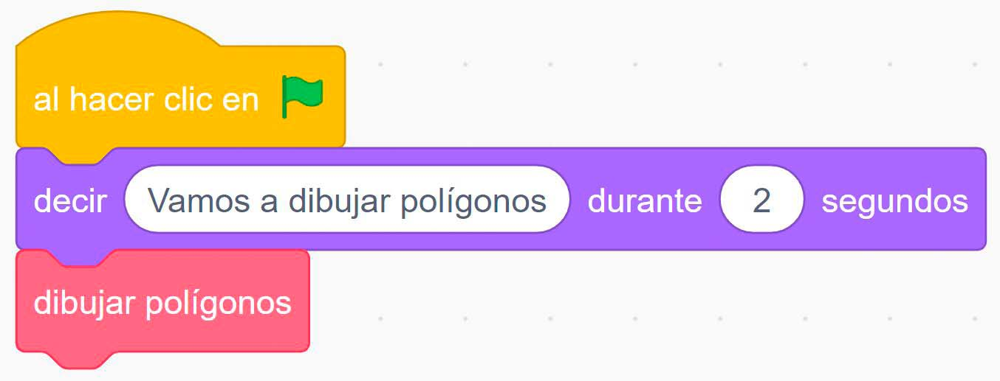
Debajo del bloque al hacer clic en bandera verde (que ha quedado en el área de código), anida las instrucciones decir Vamos a dibujar polígonos por 2 segundos, de la categoría Apariencia, y dibujar polígonos, de la categoría Mis bloques.
En tu área de código has de tener un programa que comienza con la instrucción al hacer clic en bandera verde y un subalgoritmo o procedimiento de ese programa que comienza con la instrucción definir dibujar polígonos.
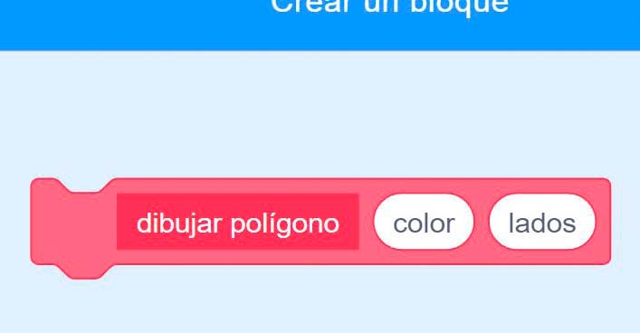
Prueba el proyecto haciendo clic en la bandera verde.
Descarga el proyecto en tu ordenador yendo a Archivo / Guardar en tu ordenador.
Ejercicio 3. Subalgoritmos con parámetros
En Scratch, los procedimientos pueden incluir diferentes parámetros que permiten el intercambio de datos entre el programa principal y el subalgoritmo. Los parámetros pueden ser de tres tipos: un número o texto, una expresión booleana o una etiqueta.
En este caso, vamos a crear un subalgoritmo con tres parámetros de tipo numérico.
Inicia un nuevo proyecto yendo a Archivo / Nuevo. Llámalo UD01_P12_2_nombreapellido.
Accede al menú Mis bloques y crea un bloque llamado dibujar polígono. Añade en él dos parámetros de tipo número llamados color y lados (figura 54).
Para el personaje, copia el procedimiento de la figura:
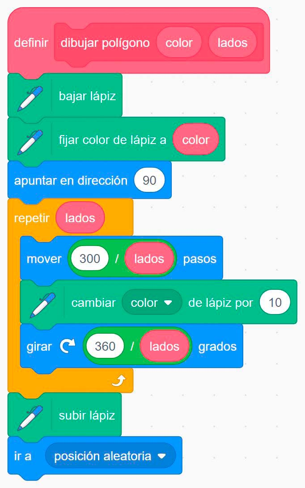
Copia ahora el programa principal siguiente:
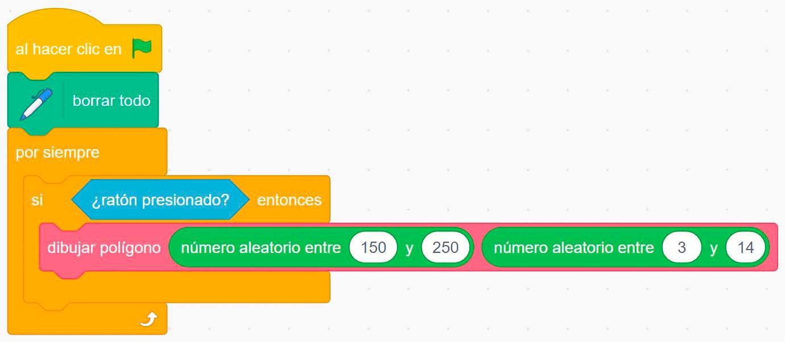
Ejercicio 4. Prueba el proyecto que has realizado
Prueba el programa haciendo clic en la bandera verde. Haz clic en cualquier parte del escenario para ver los polígonos que se van dibujando.
Descarga el proyecto en tu ordenador yendo a Archivo / Guardar en tu ordenador.
 .
.